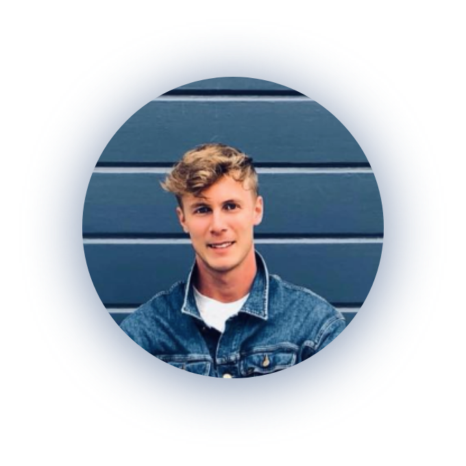

Vem är Karl-Johan aka Kalle?
Säg en dag, oavsett vilken så kan jag bada nära som helst under året! Det är min årliga challenge som jag kör för att utmana mig själv! Jag brinner för att arbeta med problemlösning i team eller solo! Jag är 23 år gammal och spenderar en stor del av tiden på Fysiken Gibraltargatan för att träna tyngdlyftning, styrkelyft och crossfit. Vid sidan av träningen umgås jag med flickvännen, vänner, läser, mediterar, programmerar eller lyssnar på Charles Bradley skrika sig ännu hesare.
